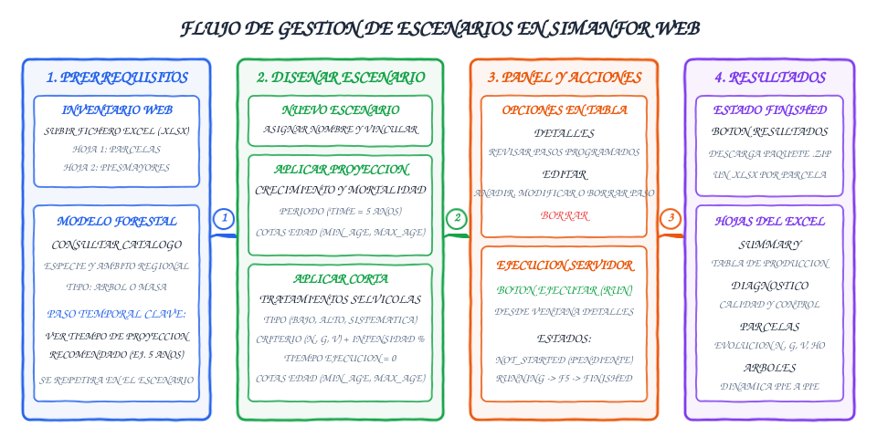
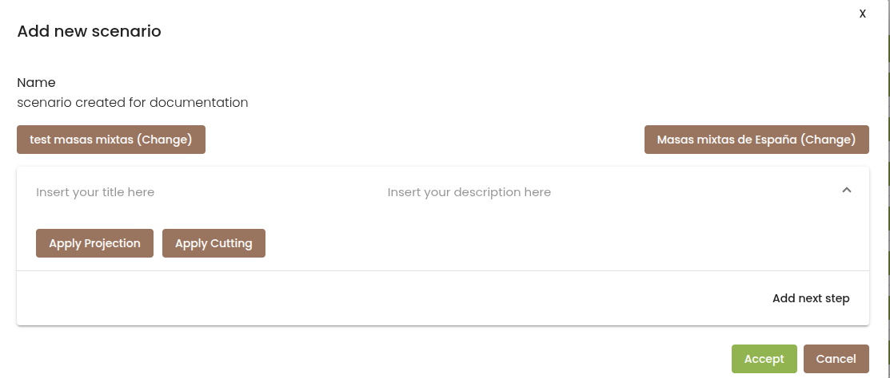
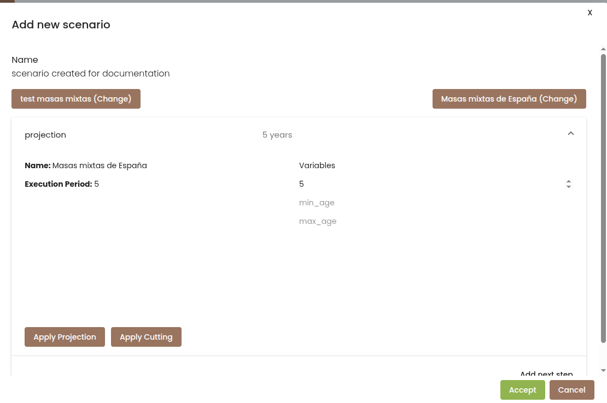
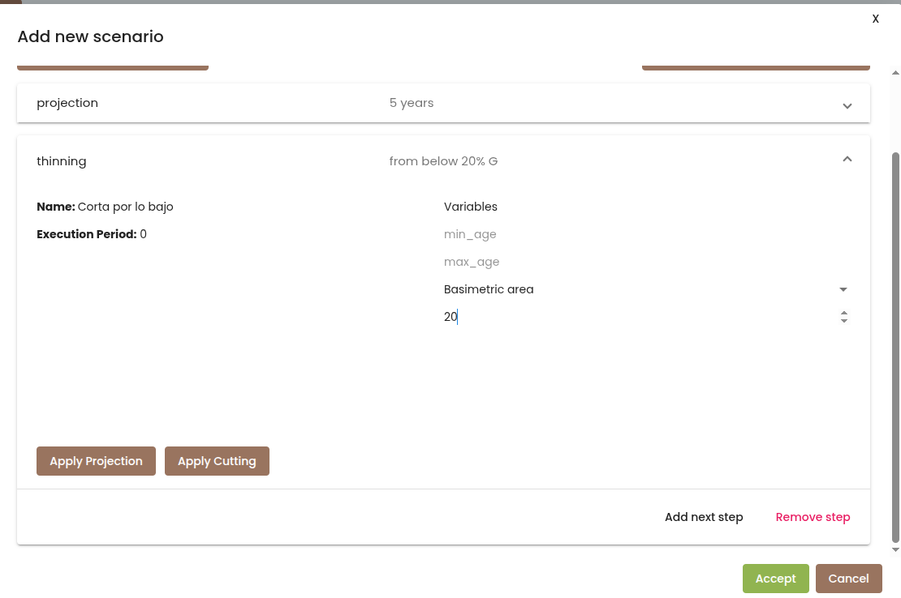
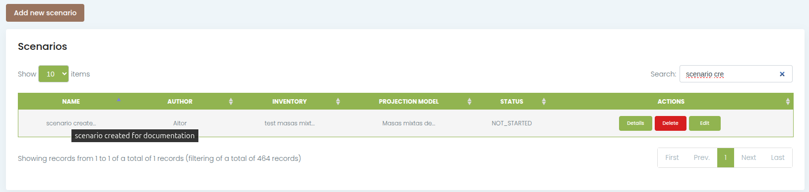
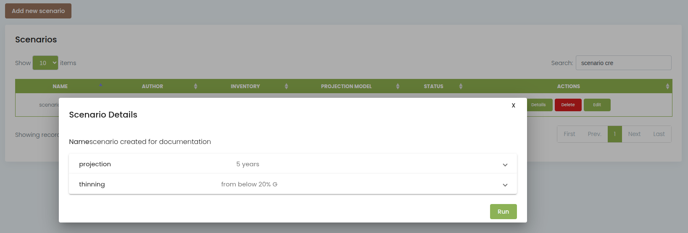
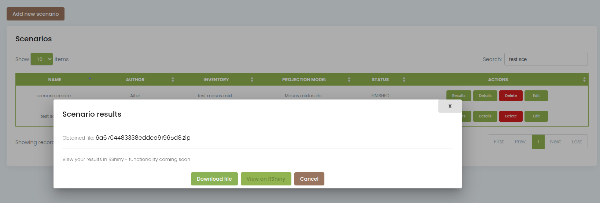

Escenarios de gestión en la plataforma web
Un escenario selvícola en SIMANFOR es la secuencia cronológica de eventos que describe la vida productiva de una masa forestal. Combina proyecciones de crecimiento a lo largo del tiempo con intervenciones de corta (claras o clareos) programadas según criterios técnicos.
Los usuarios gestionan y ejecutan sus simulaciones a través de la plataforma web (simanfor.es), sin necesidad de escribir código ni editar archivos de configuración de forma manual. Desde el navegador es posible vincular un inventario, asociarlo a un modelo de crecimiento, diseñar las intervenciones deseadas, lanzar la simulación y descargar los resultados.
Índice de contenidos
- Flujo de trabajo general
- Requisitos previos en la plataforma web
- Creación de un nuevo escenario
- Configuración de las etapas de gestión
- Simulación multirrodal y cotas de edad
- Panel de control y opciones de la tabla
- Contenido del paquete de resultados
Flujo de trabajo general
El siguiente esquema resume las cuatro fases principales para trabajar con escenarios en la web:

- Prerrequisitos: comprobar que el inventario está subido y revisar en la ficha del modelo forestal el intervalo de tiempo recomendado para proyectar.
- Diseño del escenario: agregar secuencialmente las proyecciones y las cortas requeridas.
- Panel y acciones: verificar el escenario en
detallesy ordenar la ejecución del escenario. - Resultados: descargar el archivo comprimido con los libros de cálculo en formato Excel (un archivo por parcela).
Requisitos previos en la plataforma web
Antes de crear un escenario en la web de SIMANFOR, es necesario tener preparados dos elementos:
1. Inventario cargado en la cuenta de usuario
El inventario contiene los datos dasométricos de partida. Debe subirse a través de la sección Inventarios de la barra lateral en formato Excel (.xlsx).
El libro debe contener al menos dos hojas con nombres estándar:
- Parcelas: define las características de cada rodal o parcela de muestreo (
plot_id, superficie, edad o calidad de estación si se conocen). - Árboles (o
PiesMayores): contiene las mediciones árbol a árbol para modelos de árbol individual (tree_id,dbh,height, especie y factor de expansiónexpan).
Los inventarios subidos quedan asociados de forma privada a la cuenta del usuario para su uso exclusivo en simulaciones. Para una explicación más detallada de la estructura de los inventarios, consultar la documentación de Inventarios.
2. Elección y revisión del modelo forestal
En la sección Modelos de la plataforma web se encuentra el listado de modelos disponibles. Antes de diseñar el escenario, conviene consultar la documentación técnica de cada uno en el Índice de modelos para verificar tres aspectos clave:
- Compatibilidad: comprobar que el modelo cubre la especie y la procedencia geográfica de las parcelas del inventario.
- Tipología de datos requerida: saber si el modelo es de árbol individual (requiere diámetros normales y alturas pie a pie) o de masa (opera a partir de variables agregadas como área basimétrica y densidad).
- Tiempo de proyección recomendado: este parámetro es fundamental. Los submodelos de crecimiento en diámetro, altura y supervivencia se calibran a partir de parcelas permanentes remedidas en intervalos concretos (generalmente de 5 o 10 años). Para mantener la coherencia matemática y dasométrica de las curvas, las proyecciones en el escenario deben respetar este intervalo como paso temporal base.
Creación de un nuevo escenario
Una vez verificado el inventario y elegido el modelo, el proceso se inicia en el menú lateral:
- Entrar en la sección Escenarios.
- Hacer clic en el botón superior Añadir nuevo escenario (Add new scenario).
- Completar los campos iniciales del formulario:
- Nombre: asignar un título representativo para identificar la simulación en la tabla (por ejemplo,
Pinus pinaster - Clara por lo bajo 20%). - Inventario inicial: seleccionar el archivo subido en el paso previo. Si se necesita cambiar, puede pulsarse sobre el botón marrón de selección.
- Modelo de proyección: elegir el modelo forestal adecuado.
- Nombre: asignar un título representativo para identificar la simulación en la tabla (por ejemplo,

Al confirmar estos datos, la plataforma genera automáticamente el proceso de carga de datos brutos y la inicialización matemática del modelo, dejando la interfaz preparada para incorporar los pasos selvícolas.
Configuración de las etapas de gestión
El cuerpo del escenario se construye agregando operaciones en orden cronológico mediante el botón Añadir nuevo paso (Add next step). Cada paso representa un evento en la masa forestal y puede corresponder a dos naturalezas distintas:
Proyecciones de crecimiento
Una proyección avanza el reloj de la simulación. En este paso el motor aplica las funciones de incremento diamétrico, crecimiento en altura, mortalidad natural e incorporación de nuevo arbolado (ingrowth).
Para programar una proyección se pulsa en Aplicar Proyección (Apply Projection) y se definen sus variables:
- Periodo de ejecución (
time): número de años que crecerá la masa. Debe coincidir con el tiempo de proyección recomendado en la ficha del modelo forestal (por ejemplo, 5 años). Si se requiere simular un periodo de 20 años sin intervenciones intermedias, lo recomendable es encadenar 4 proyecciones consecutivas de 5 años, en lugar de una sola proyección de 20 años. El propio modelo seleccionado nos sugiere, a la izquierda, los intervalos de edad recomendados para proyectar. - Cotas de edad (
min_ageymax_age): parámetros opcionales. Permiten condicionar el crecimiento a que la parcela se encuentre dentro de un rango de edad determinado. Si la parcela queda fuera de este intervalo, la proyección se omite para esa parcela. Resultan parámetros útiles para simulador un mismo escenario de gestión para un grupo de parcelas con edades iniciales dispares, asegurándonos de que cada intervención se aplica en el momento oportuno para cada parcela y garantizando que tenga un comportamiento biológico coherente.

Cortas y tratamientos selvícolas
Una corta extrae árboles de la masa para regular la competencia y aprovechar madera. A diferencia de las proyecciones, las cortas no implican paso del tiempo biológico; son intervenciones puntuales.
Para programar una corta se pulsa en Aplicar Corta (Apply Cutting) y se configuran los siguientes parámetros:
- Modelo de corta: menú desplegable para elegir el tipo de intervención. Las opciones disponibles varían según el tipo de modelo:
- Modelos de árbol individual: corta por lo bajo, corta por lo alto, corta sistemática, cortas con reserva de árboles de futuro o cortas dirigidas por especie en masas mixtas. La explicación matemática y operativa de cada una se encuentra detallada en la guía de Modelos de corta.
- Modelos de masa: cortas a nivel de rodal que reducen el área basimétrica o el volumen total sin individualizar los pies.
- Tiempo de ejecución (
time): se debe mantener en 0. Las cortas se consideran instantáneas. Si se asignara un valor superior a 0, el modelo interpretaría erróneamente un crecimiento simultáneo durante el apeo. - Criterio de corta (
type): magnitud dasométrica sobre la que se calculará la extracción:- Densidad (
Number of trees/Density): porcentaje aplicado sobre el número de pies por hectárea. - Área basimétrica (
Basal area): porcentaje aplicado sobre la superficie ocupada por los troncos ($G$ en m²/ha). - Volumen (
Volume): porcentaje aplicado sobre el volumen de madera en pie ($V$ en m³/ha).
- Densidad (
- Intensidad de corta (
percent): porcentaje exacto de la magnitud elegida que será extraído (valor entre 1 y 100). - Cotas de edad (
min_ageymax_age): definen la ventana de edad en la que se aplicará la corta. Resultan imprescindibles cuando el inventario agrupa parcelas con edades heterogéneas. Permiten por ejemplo realizar una corta solo en parcelas maduras y no aplicar esa corta en parcelas mas jóvenes.

Cómo simular claras semisistemáticas
La plataforma web no dispone de un botón único para claras semisistemáticas, pero estas pueden reproducirse con exactitud encadenando dos pasos seguidos a la misma edad:
- Una primera corta sistemática con la intensidad correspondiente a la apertura de calles (por ejemplo, extracción de 1 de cada 5 líneas, equivalente a un 20 % sistemático).
- A continuación, una segunda corta por lo bajo sobre el arbolado remanente entre calles, calculada sobre el porcentaje restante deseado.
Si se comete un error al configurar cualquier paso, puede eliminarse mediante el enlace Eliminar paso (Remove step). Una vez completado todo el calendario de intervenciones, se pulsa en Aceptar (Accept) para guardar el escenario.
Simulación multirrodal y cotas de edad
En la práctica forestal es habitual contar con un inventario formado por varios rodales que tienen edades distintas de partida (por ejemplo, parcelas de 20, 32, 41 y 47 años). En lugar de diseñar un escenario independiente para cada rodal, SIMANFOR permite aplicar un único escenario general a todo el conjunto mediante el uso de las cotas de funcionamiento (min_age y max_age).
Regla de funcionamiento del motor
Cuando el simulador procesa una parcela en un determinado paso del escenario, comprueba si la edad actual de dicha parcela cumple la siguiente condición:
$$\text{min_age} \le \text{Edad de la parcela} \le \text{max_age}$$
- Si la edad está dentro del intervalo, la operación (corta o proyección) se ejecuta con normalidad.
- Si la edad está fuera del intervalo, la operación se ignora para esa parcela y el simulador pasa de inmediato al siguiente paso.
Definición de márgenes de tolerancia
Dado que las parcelas de inventario no siempre coinciden de forma exacta con los años múltiplos del ciclo de proyección (por ejemplo, una parcela de 32 años frente a un paso de 5 años), se recomienda fijar una ventana de tolerancia de entre 2 y 3 años por encima y por debajo de la edad teórica de intervención.
Ejemplo práctico: esquema selvícola para Pinus pinaster
Supongamos un turno de 80 años para pinar de Pinus pinaster con las siguientes intervenciones teóricas:
- 20 años: clareo inicial (si la densidad supera 1.500 pies/ha).
- 40 años: primera clara (extracción del 38 % de la densidad mediante clara semisistemática).
- 50 años: segunda clara por lo bajo (extracción del 40 % de los pies).
- 65 años: tercera clara por lo bajo (extracción del 27 % de los pies).
- 80 años: turno final de corta.
Para trasladar este esquema a un escenario multirrodal con un paso de proyección de 5 años, se programa una tabla de operaciones como la siguiente:
| Paso | Operación | Tipo / Tratamiento | Criterio e intensidad | Edad estándar | Cotas programadas (min_age - max_age) |
|---|---|---|---|---|---|
| 1 | Proyección | Crecimiento a 5 años | - | 20 a 25 | 17 a 23 |
| 2 | Proyección | Crecimiento a 5 años | - | 25 a 30 | 22 a 27 |
| 3 | Proyección | Crecimiento a 5 años | - | 30 a 35 | 27 a 32 |
| 4 | Proyección | Crecimiento a 5 años | - | 35 a 40 | 32 a 37 |
| 5 | Corta | Sistemática (calles) | $N = 19\,\%$ | 40 | 37 a 42 |
| 6 | Corta | Por lo bajo (entre calles) | $N = 24\,\%$ | 40 | 37 a 42 |
| 7 | Proyección | Crecimiento a 5 años | - | 40 a 45 | 37 a 42 |
| 8 | Proyección | Crecimiento a 5 años | - | 45 a 50 | 42 a 47 |
| 9 | Corta | Por lo bajo | $N = 40\,\%$ | 50 | 47 a 52 |
| 10 | Proyección | Crecimiento a 5 años | - | 50 a 55 | 47 a 52 |
| 11 | Proyección | Crecimiento a 5 años | - | 55 a 60 | 52 a 57 |
| 12 | Proyección | Crecimiento a 5 años | - | 60 a 65 | 57 a 62 |
| 13 | Corta | Por lo bajo | $N = 27\,\%$ | 65 | 62 a 67 |
| 14 | Proyección | Crecimiento a 5 años | - | 65 a 70 | 62 a 67 |
| 15 | Proyección | Crecimiento a 5 años | - | 70 a 75 | 67 a 72 |
| 16 | Proyección | Crecimiento a 5 años | - | 75 a 80 | 72 a 77 |
El turno de corta final
No es necesario ni recomendable programar una corta del 100 % al final del turno (80 años). Si se aplicara una corta total a hecho, las existencias finales de la masa pasarían a valer cero en el archivo de resultados. Basta con proyectar el rodal hasta la edad de turno para consultar en el reporte las existencias en pie acumuladas antes de la corta final.
Panel de control y opciones de la tabla
Una vez guardado, el escenario queda registrado en la tabla general de la sección Escenarios:

La tabla muestra las columnas de identificación del escenario (NAME), usuario creador (AUTHOR), inventario asociado (INVENTORY), modelo elegido (PROJECTION MODEL), estado del cálculo (STATUS) y los botones de acción (ACTIONS):
| Botón | Función operativa | Cuándo utilizarlo |
|---|---|---|
| Detalles (Details) | Abre una ventana modal con el desglose cronológico de todos los pasos configurados. En la parte inferior incluye el botón verde Ejecutar (Run). | Para revisar que las operaciones y cotas son correctas y para ordenar el inicio de la simulación. |
| Editar (Edit) | Abre de nuevo el formulario del escenario con todos sus pasos editables. | Para modificar parámetros, añadir nuevos pasos intermedios o eliminar intervenciones antes de lanzar la simulación. |
| Borrar (Delete) | Elimina definitivamente el escenario y su configuración de la cuenta del usuario. | Para limpiar simulaciones antiguas o pruebas descartadas. |
| Resultados (Results) | Se activa cuando el estado pasa a FINISHED. Abre la ventana para descargar el archivo de resultados en formato .zip. |
Para obtener las salidas numéricas una vez finalizado el cálculo en el servidor. |
Ciclo de vida y ejecución de una simulación
- Estado
NOT_STARTED: el escenario está guardado pero aún no se ha ejecutado en el servidor. - Lanzamiento: pulsar en Detalles y hacer clic en el botón verde Ejecutar (Run). El sistema compila la configuración interna y transfiere los datos al motor de simulación.

- Estado
RUNNING: la simulación se encuentra en proceso en el clúster de cómputo. El tiempo de resolución depende del número de parcelas, de la densidad de pies del inventario y del número de proyecciones configuradas. Es necesario refrescar de forma manual la página en el navegador (pulsandoF5o el botón de recarga) para comprobar si el cálculo ha concluido y el estado ha cambiado. - Estado
FINISHED: el motor ha finalizado todos los cálculos y los archivos de salida están empaquetados en el servidor. En la tabla se habilitará el botón verde Resultados.

Fallas puntuales de conexión en la ejecución
Si tras pulsar Ejecutar y refrescar la página de forma manual con F5 el estado no se actualiza pasados unos minutos, o la conexión con el servidor experimenta una microinterrupción, vuelve a abrir la ventana de Detalles y pulsa de nuevo en Ejecutar. La plataforma reenviará la orden de simulación al servidor de cálculo.
Contenido del paquete de resultados
Al hacer clic en Resultados y confirmar la descarga del archivo .zip, el usuario obtiene un paquete comprimido que contiene un libro de cálculo Excel (.xlsx) por cada parcela procesada del inventario.
Cada archivo Excel incluye las siguientes hojas de información técnica:
- Summary: tabla de producción (yield table) con el balance global de la masa a lo largo de toda la simulación. Muestra las existencias iniciales, los volúmenes totales extraídos en cada clara y los crecimientos netos acumulados.
- Diagnostico (o
Report): semáforo de validación que alerta si alguna variable dasométrica (alturas, coeficientes de esbeltez o densidad) ha superado los rangos de validez biológica del modelo forestal empleado. - Parcelas (o
Plots): evolución temporal detallada a nivel de masa en cada nodo temporal (inicial, antes de corta, después de corta y proyecciones). Recoge variables como densidad ($N$), área basimétrica ($G$), altura dominante ($Ho$), diámetro medio cuadrático ($Dg$), volumen con corteza ($V$), fracciones de biomasa y existencias de carbono. - Árboles (o
Trees): registro pormenorizado árbol a árbol a lo largo del tiempo para modelos de árbol individual, indicando la evolución de diámetro, altura, biomasa y el estado de cada pie (alive,dead,cutoingrowth).
Estos archivos pueden analizarse directamente en hojas de cálculo o importarse en paquetes estadísticos como R o Python para generar curvas de evolución y comparar diferentes alternativas de gestión silvícola. Para una descripción pormenorizada de la estructura de las hojas y la interpretación dasométrica de las variables, consultar la guía de Interpretación de resultados y salidas.